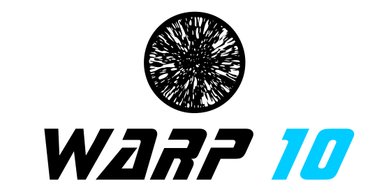

What are exoplanets?
Exoplanets are planets that are located outside the solar system, orbiting one (or more!) stars. We can find
them using the Transit method,
meaning that when the planet is going in front of the star, we can detect a drop into the photometry.

What is Warp10?
Warp10 is an open-source platform specifically designed to store and analysis
timeseries data. It comes with his own language called WarpScript, which has more than 800 functions
designed to manipulate your data. Things like FFT, DTW and other signal processing stuff are available
through a simple API.
What is TensorFlow?
TensorFlow is a open-source to create deep learning applications. Deep learning provide new tools to manipulate and analyze time-series data using machine learning approach.